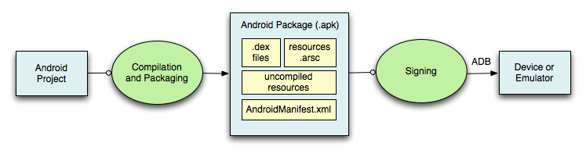

In this document
During the build process, your Android projects are compiled and packaged into an .apk file,
the container for your application binary. It contains all of the information necessary to run
your application on a device or emulator, such as compiled .dex files (.class files
converted to Dalvik byte code), a binary version of the AndroidManifest.xml file, compiled
resources (resources.arsc) and uncompiled resource files for your application.
If you are developing in Eclipse, the ADT plugin incrementally builds your project as you
make changes to the source code. Eclipse outputs an .apk file automatically to the bin folder of
the project, so you do not have to do anything extra to generate the .apk.
If you are developing in a non-Eclipse environment, you can build your project with the
generated build.xml Ant file that is in the project directory. The Ant file calls targets that
automatically call the build tools for you.
To run an application on an emulator or device, the application must be signed using debug or release mode. You typically want to sign your application in debug mode when you develop and test your application, because the build tools use a debug key with a known password so you do not have to enter it every time you build. When you are ready to release the application to Google Play, you must sign the application in release mode, using your own private key.
Fortunately, Eclipse or your Ant build script signs the application for you in debug mode when you build your application. You can also easily setup Eclipse or your Ant build to sign your application in release mode as well. For more information on signing applications, see Signing Your Applications.
The following diagram depicts the components involved in building and running an application:
A Detailed Look at the Build Process
The build process involves many tools and processes that generate intermediate files on the
way to producing an .apk. If you are developing in Eclipse, the complete build process is
automatically done periodically as you develop and save your code changes. If you are using other
IDEs, this build process is done every time you run the generated Ant build script for your
project. It is useful, however, to understand what is happening under the hood since much of the
tools and processes are masked from you. The following diagram depicts the different tools and
processes that are involved in a build:

The general process for a typical build is outlined below:
- The Android Asset Packaging Tool (aapt) takes your application resource files, such as the
AndroidManifest.xmlfile and the XML files for your Activities, and compiles them. AnR.javais also produced so you can reference your resources from your Java code. - The aidl tool converts any
.aidlinterfaces that you have into Java interfaces. - All of your Java code, including the
R.javaand.aidlfiles, are compiled by the Java compiler and .class files are output. - The dex tool converts the .class files to Dalvik byte code. Any 3rd party libraries and
.class files that you have included in your project are also converted into
.dexfiles so that they can be packaged into the final.apkfile. - All non-compiled resources (such as images), compiled resources, and the .dex files are
sent to the apkbuilder tool to be packaged into an
.apkfile. - Once the
.apkis built, it must be signed with either a debug or release key before it can be installed to a device. - Finally, if the application is being signed in release mode, you must align the
.apkwith the zipalign tool. Aligning the final.apkdecreases memory usage when the application is running on a device.